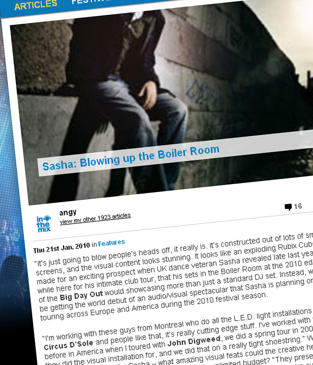

Sasha: Blowing up the Boiler Room
{kind=link}

“It’s just going to blow people’s heads off, it really is. It’s constructed out of lots of small screens, and the visual content looks stunning. It looks like an exploding Rubix Cube.” It made for an exciting prospect when UK dance veteran Sasha revealed late last year, while here for his intimate club tour, that his sets in the Boiler Room at the 2010 edition of the Big Day Out would showcasing more than just a standard DJ set. Instead, we’d be getting the world debut of an audio/visual spectacular that Sasha is planning on touring across Europe and America during the 2010 festival season.
“I’m working with these guys from Montreal who do all the L.E.D. light installations for Circus D’Sole and people like that, it’s really cutting edge stuff. I’ve worked with them before in America when I toured with John Digweed, we did a spring tour in 2008 which they did the visual installation for, and we did that on a really tight shoestring.” Which begged the question for Sasha – what amazing visual feats could the creative heads pull off if he presented them with the luxury of an unlimited budget? “They presented me with this stage production. I’ve just seen some of the treatments for it, they’re custom building this stage in Montreal then shipping it over. And yeah, it’s going to blow people’s heads off.”
Sasha kickstarted his career way back in the legendary acid house scene of the late ‘80s, and he’s one of the original ‘superstar DJs’ who still never fails to draw the crowds. He’s also the same guy who released the culture defining Renaissance – The Mix Collection in the middle of the 90s, followed by the equally seminal Global Underground 013: Ibiza a few years later – he is equally responsible for countless dancefloor ‘moments’ over the past 20 years. That’s a lot of history and experience behind the decks – but still, Sasha says he continues to find the major festivals a challenge. While trance acts like Above & Beyond and Armin van Buuren deliver a sound that lends itself perfectly to entertaining tens of thousands of people, when you’re talking about the deeper sounds of progressive and underground house, it’s a lot tougher to make it work. His Boiler Room audio/visual project is a direct response to that.
“I’ve always struggled with my festival sets. I’ve always wanted to do something more, and something different,” Sasha says. “I’m not the DJ who plays the big anthem tunes. I’m much more comfortable in a club set where I’ve got 5 hours where I can settle into a groove. When you’ve only got an hour and a half, I’ve struggled to present myself like that. I know that’s where I started all those years ago, playing hour long sets at raves, but musically I’ve gone off a million miles from that now.”
It was late November when ITM sat down with Sasha for a chat, in the swank surrounds of the bar attached to the Metropolitan Hotel in the Sydney CBD. At the time he was cruising on the afterglow of what had proven to be a hugely successful club tour over the weekend – both for him, as well as for the fans who rocked up to see him play. What surprised everyone most was that while we’ve come to expect sets full of stripped back bleepy tech from Sasha over the past few years, when he hit the decks last November he came busting out with the kind of euphoric melodies we hadn’t heard since the glory days of progressive house back in the late 90s. You could almost feel the exhilarated surprise among the crowds – what the hell was going on, and where were all these trancey melodies coming from?
Sasha chuckles at the mention of it. “There are a lot of really good tunes out there, producers like Henry Saiz are releasing some amazing music and it sounds a lot like me.” Sasha famously made a point of moving away from the ‘progressive’ sound around the time he released his debut Airdrawndagger album in 2002. However, while he was interested in moving on and exploring different things, he says he’s got no issue with returning to that classic sound. “There are some really brilliantly produced records with beautiful melodies in them, and they really work in getting the crowd going. I know there’s something about that sound at the moment that’s got that progressive throwback to it. That was a really big time for me, so I’ve got no problems playing that sound.”
The other really big shakeup of the tour last November was talk that Sasha had ditched his Ableton Live setup, and embraced Pioneer’s spanking new CDJ-2000s in its place. He was one of the first high-profile DJs to take advantage of Ableton a few years ago, heralded as a pioneer of the next generation; however, when his custom-built machine broke down recently, he was left with no choice but to return to the old-school method of mixing records together. And he kinda liked it.
“I’d just been sent those CDJ2000s, and I haven’t done a long performance using CDs for about several years, so I spent three days in the hotel room in Australia just listening to music, building my playlist in the machines and just practicing because it’s been a while. But I really enjoyed it, and the new machines are just amazing to work with….. The way they’ve incorporated software and hardware together is really clever. You can basically sit there on the plane you can organise all your music, everything in the program, drop it onto a USB key and all your playlists are in there.”
Not surprisingly, both formats require a completely different approach, although Sasha insists it’s not a case of one being any better than the other. “The thing about Abelton is it allows you to create a constant sound,” he says. “If you tried to mix the tracks together in the same way with CDs then it might not fit together properly, so it’s allows you to play quite eclectic sets.” However, Ableton still comes with problems all of its own. “They haven’t addressed a lot of the things that DJs need. There are a lot of things that need to be changed, but I don’t think they believe the market is big enough so they haven’t confronted a lot of the problems,” he says. “But a change is good every now and then, anyway. The Abelton thing was great, but I was getting tired of squinting at that screen all night. It’s really nice to play CDs again.”
Sasha’s long-term technology plan is to splice both of them together into some heinous genetic mutation, that’ll allow him to access the best of both worlds. “What I’m going to end up doing is incorporating Abelton into a gigantic MP3 type sampler with loads of sound effects, and a big effects uni. Pioneer effects are okay but they’re very recognisable, but with Ableton you can custom build any effects you want, so I think I’ll probably end up incorporating it where I can, dropping loops over the top of what I’m doing, or sampling loops off the CDs and syncing it up. Rather than being the main media player, it will be something that I use to enhance my DJ set.”
When the conversation turns to Sasha’s output as a producer over the past few years, it has a rather positive spin because, as anyone who follows his musical movements will know, he’s been more than prolific in recent times. This wasn’t always the case; while he had a smattering of anthems in the 90s like the eternal Xpander, it was an eternity before he finally got his debut album Airdrawndagger out in 2002. He’s been consistent since then, but it’s really been the last three years in particular where he’s established a solid flow of music – peaking with the release of his superb Invol2ver in 2008. A lot of this has to do with the formidable posse of producers he’s recruited to help make it happen in his New York City studio, including fellow veterans Charlie May (who’s also currently on tour in Australia) and Barry Jamieson. He says it’s a team that is still intact now.
“We first set up the studio in New York when we were doing Invol2ver, and it’s the first time I’ve had a studio running the whole time,” Sasha says. “So I’ve got a guy that works there. If we’re working on a remix he’ll send me the session, I’ll put some loops in it, start doing an arrangement, upload back to the studio, he’ll tweak it out, process stuff, start passing things backwards and forwards. Then I’ll send it to Charlie May in London he’ll put some keyboards on it, and it’s been a good way to work.”
From all accounts the boys have found the right groove together, and it’s not something they’ll be looking to change anytime soon. “Charlie would be very difficult to replace, he’s such a musical genius. He’s amazing, the way he approaches it when he sits in front of the keyboard and plays, it’s unmistakably him. Baz as well, having somebody there who understands the language that I speak and can translate it into the mix, it’s very important to have that understanding and it’s taken years to find that.”
Sasha has been there since the very bloom of dance culture in the late 80s; but unlike so many of the acid house trailblazers who’ve since withered and disappeared, he’s also been there ever since. No matter what the trend, where the musical energy is or what people are listening to – Sasha has always been there, and he’s been relevant too. There’s been a lot of musical zigzagging during this time; how does he know when to change direction, and when to stay on course?
“It’s intuitive,” Sasha says. “But you have to read the crowd as well, and you can’t stray too far away from your roots. Unless you’re going to present yourself in a different light, if you’re going to do a beach bar in Ibiza where you can get to play different funky music and people accept that. But if people are coming to see you in an environment where they used to seeing you for the last few years, then you have to deliver a level of consistency.” Admittedly though, consistency hasn’t always been Sasha’s strongest point, “I think some people who listen to me DJ would probably prefer it if I was a little more consistent. I’ve been doing this for 20 years; if I had to do the same thing over and over again I just don’t think I’d still be doing it.”
With such an extensive history in electronic music, there’d always the fear that one day, you’ll fail to be excited by what you’re hearing anymore. It’s happened to more than a few DJs over the years, and once the inspiration dies you can really hear it in their sets. But Sasha says that’s never been a danger for him. “You go through patches where you’re not really feeling the music at the moment, but it always comes around. That’s the great thing about electronic music, it’s always eating itself and spewing out some bastard child. Even if it goes backwards and is sampling itself, it’s still moving forward.”
http://www.inthemix.com.au/features/45611/Sasha_Blowing_up_the_Boiler_Room